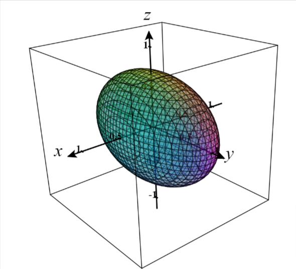
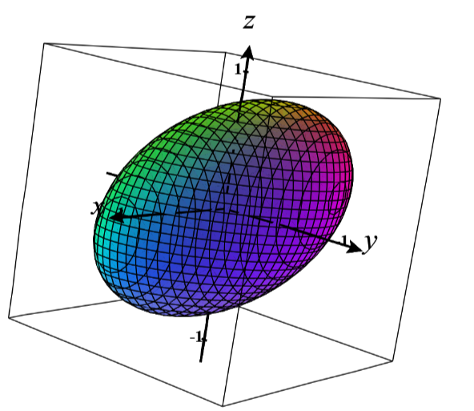

Se $B$ é uma matriz quadrada qualquer então $A=BB^T$ é semi-definida positiva, isto é
$$ \langle x,Ax \rangle \geq 0 \forall x \neq 0$$
$A$ pode não ser invertível
Outro Teorema
Uma matriz simétrica $A$ é definida positiva se e somente se
existe uma matriz $R$ com $n$ colunas LI (posto $n$) tal que
$$ A = R^TR $$
Formas quadráticas
Se $A$ é uma matriz simétrica então a função
$f_A: \mathbb{R}^n \to \mathbb{R}$ definida por $f_A(x)=\langle x,Ax \rangle$
é uma forma quadrática. Se $A$ é definida positiva, a forma quadrática também é dita
definida positiva.
Elipsoides
No caso de uma matriz definida $A$ positiva o conjunto
$$ \mathcal{E} = \{ x\in \mathbb{R}^n : f_A(x) =1\} $$
define um Elipsoide com os eixos principais coincidindo com as
direções dos autovetores, e $\frac{1}{\sqrt{\lambda_i}}$ os raios do elipsoide na
direção do correspondente eixo.


Figuras feitas no C3D
Relação de congruência
Diremos que duas matrizes simétricas, $A_1$ e $A_2$ são congruentes, quando existir
uma matriz invertível $P$ tal que
$$ A_2 = P^TA_1P$$
Note que elas não precisam ser semelhantes.